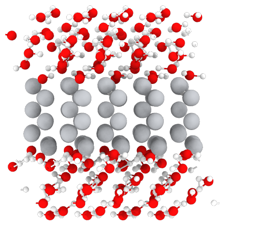

R-R Catch-up Meeting

Introduction
Introduction to current work
- Fitted a quantum mechanical model of titanium to look at defect interactions and atomistic mechanisms of solute hardening.
- Simulations of oxygen-defect interactions are crucial, as such we use various methods.
- Using the same model, in parameters from a TiO2 model, we can look at water on a pure titanium surface (previously asked by Dave Rugg)
Theory
Tight Binding
- Tight binding is an approximation to DFT.
- Overlaps between atomic orbitals are key parameters.
- Parameters can be fitted to experimental data
- \(\mathcal{O}(N^3)\), but much smaller prefactor compared to DFT.

BOP
- BOP is a faster but less accurate \(\mathcal{O}(N)\) method of interatomic force calculation within tight-binding.
- One builds a local density of states from moments, giving detailed electronic structure information.

Embedding
- Idea is to combine speed of BOP (\(\mathcal{O}(N)\)) with accuracy of tight-binding \(\mathcal{O}(N^3)\).
- Increasing the number of atoms gives freedom to:
- Investigate isolated dislocations.
- Include solutes at more realistic concentrations.
- Simulate interfaces near a surface (e.g. TiO\(_2\) and bulk Ti [Future Work ])

Results
Core structures
- Dislocation cores are sensitive to boundary conditions.
- Sufficient resolution of core structure is necessary ascertain how dislocation glide is modified.
\(\frac{1}{3}\langle11\bar{2}0\rangle\) screw


Dislocation Dissociation
- Correct dissociation found of \(\frac{1}{3}[1\bar{2}10] = \frac{1}{6}[1\bar{2}10] + \frac{1}{6}[1\bar{2}10]\).
- Dissociation distance between cores is \(\sim4c\), which is larger than what is found in DFT.

Peierls Stress
- To find the peierls stress, the critical stress to move a dislocation upon a glide plane, one can incrementally strain and relax the simulation cell until the dislocation has been seen to move to the next peierls valley.
Prismatic Peierls Stress
- Using an increment in the strain of \(\epsilon_{xz}\) by \(1\times 10^{-4}C_{44}'\), the dislocation moves by c/2 at \(\sigma_{xz}= 0.0012C_{44}'\), giving a Peierls stress of \(\sigma_{xz} = 2C_{44}\epsilon_{xz}= 0.0923\) GPa.
- This is half the strain necessary for the MEAM potential of Trinkle et al.
O-dislocation binding
- 576 atom quadrupolar cell of 1b depth relaxed.
- Cell replicated three times, giving depth of 3b.
- O placed in octahedral sites at various distances from the dislocation core in the middle layer.
Interaction energy defined as
\[ E^{\text{Int}}_{} = E_{\text{disl-O}} - E_{\text{disl}} - E_{\text{perfect-O}} + E_{\text{perfect}} \]
 v
v


Current Work
Embedding: disl-O interaction in Ti
- Relaxing O-dislocation cells using embedding approach.

Improving basis for Ti
- Added \(s\) electrons to Ti, for a more realistic description.
- Effects on predicted core structure/formation free energies have yet to be determined.
Water on Ti
Relaxed Structure 
Charges (\(\text{H}^{\text{-}}\) ion in green)
Improving Ti-H / H-H Parameters
- Fitting the Ti-H/H-H parameters using DFT data of hydrides and energies upon approaching surface.
- Useful for future calculations of water on interfaces.
\(\delta\text{-TiH}_2\)